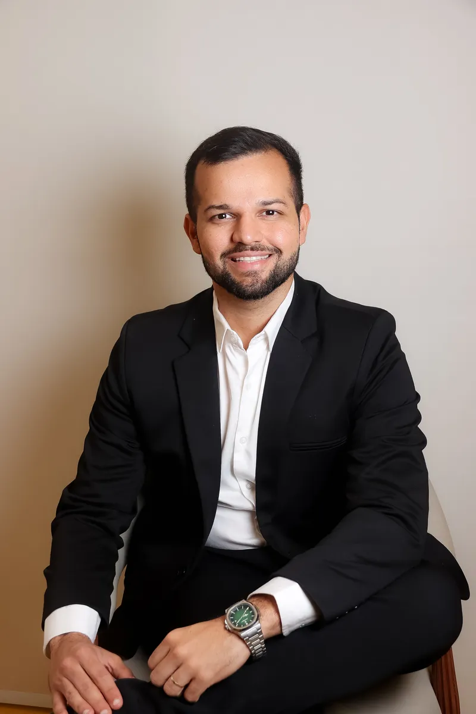
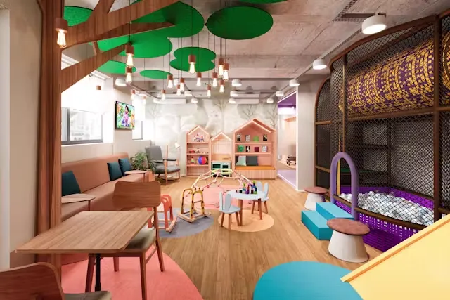
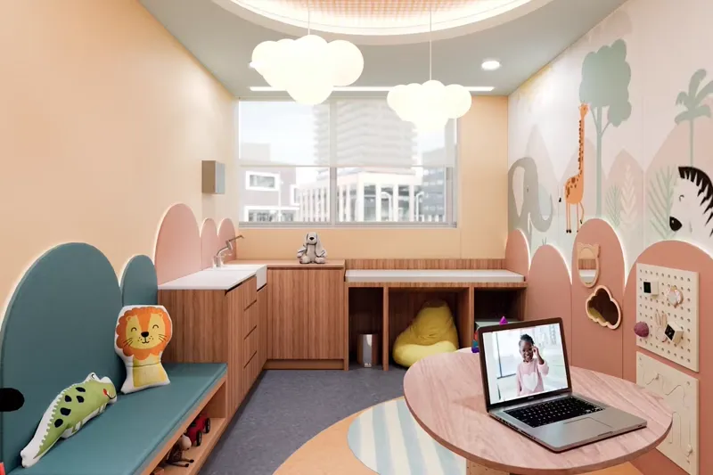
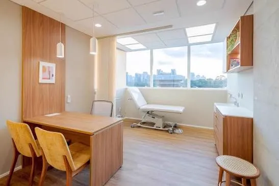
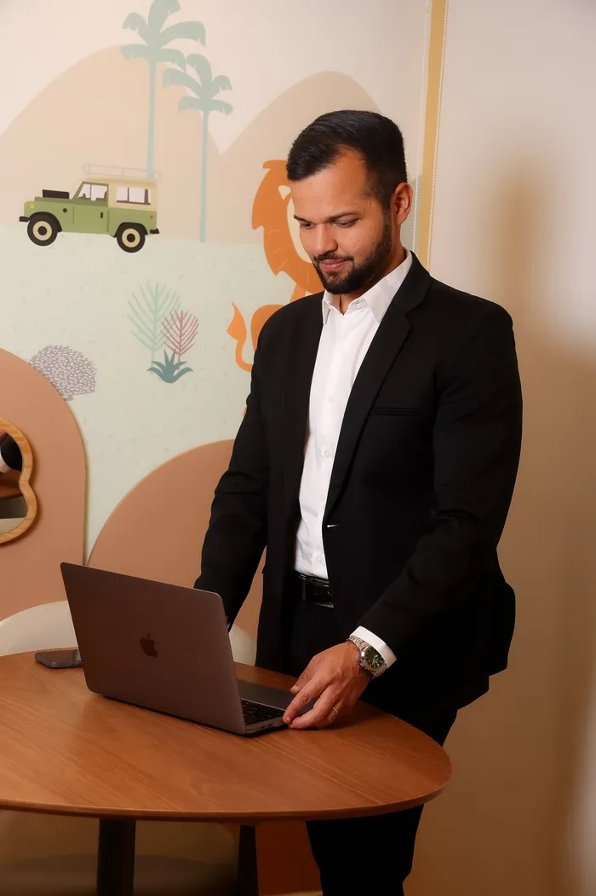

Alergia infantil em São Paulo
Consultas de 1 hora com o Dr. Bruno William, alergista e imunologista pediátrico, residência pela UNIFESP. Encaixe em até 48 horas em quadros agudos.
Nota fiscal para reembolso · Sem encaminhamento · Teleconsulta para todo o Brasil · CRM-SP 222528 · RQE 1406541

Dr. Bruno William Lopes de Almeida
A história do Dr. Bruno começa em Teresina, no Piauí, onde se formou em Medicina e presidiu a Liga de Pediatria — foi ali que ele soube que a vida dele seria cuidar de crianças. Com o diploma na mão, atravessou o país para se formar nas escolas mais exigentes da especialidade: a residência em Pediatria no Hospital Infantil Cândido Fontoura e a especialização em Alergia e Imunologia Pediátrica na UNIFESP — Escola Paulista de Medicina, serviço de referência nacional.
Foi nos plantões de pronto-socorro infantil que a alergia o escolheu: crianças voltando repetidas vezes com crises de asma, reações na pele e alergias alimentares — e pais exaustos, sem respostas. O Dr. Bruno decidiu ser o médico que investiga até o fim. Por isso as consultas duram cerca de 1 hora: tempo de ouvir a história completa, examinar com calma e sair com um plano claro.
Hoje atende crianças e adultos nas unidades Livance Tatuapé e Livance Ibirapuera, com agenda aberta para encaixe em até 48 horas em quadros agudos — crise de asma, reação alérgica, piora de dermatite — além de teleconsulta para retornos e pacientes de outras cidades, sempre com investigação baseada em testes alérgicos e anamnese detalhada.
Formação em escolas de referência
Cada etapa da formação foi dedicada a um objetivo: cuidar de crianças com alergias e dos seus pais com técnica, ciência e acolhimento.
Graduação em Medicina
UNINOVAFAPI — Teresina, PI. Presidente da Liga de Pediatria e do Centro Acadêmico de Medicina durante a graduação.
Residência em Pediatria
Hospital Infantil Cândido Fontoura — São Paulo, SP · RQE 140654
Residência em Alergia e Imunologia Pediátrica — UNIFESP
Escola Paulista de Medicina, serviço de referência terciária na especialidade. Testes cutâneos, provocações orais, imunoterapia e imunobiológicos · RQE 1406541
Trabalho apresentado na ASBAI
"Odisseia Diagnóstica dos Erros Inatos da Imunidade" — Congresso da Associação Brasileira de Alergia e Imunologia, 2025.
Consultório em São Paulo e teleconsulta
Atendimento de crianças e adultos com doenças alérgicas e imunológicas nas unidades Tatuapé e Ibirapuera. Também atua como coordenador médico de pronto-socorro infantil na Rede D'Or São Luiz.
Consultório feito para crianças
Unidades equipadas para investigação completa, com um ambiente acolhedor para os pequenos pacientes — nada de sala de espera fria.



O que trato
Já perdeu a conta de quantas vezes foi à emergência com crise de alergia do seu filho? Quanto você já gastou com remédio que não resolveu de verdade?
Diagnóstico e tratamento completo das principais condições alérgicas e imunológicas em crianças e adultos.
Seu filho está em crise agora? Veja primeiro os sinais de emergência e o que fazer em casa.
Ver o que fazer agora →Uma consulta sem pressa
Do primeiro contato ao acompanhamento, cada etapa cresce com a sua família.
Contato pelo WhatsApp
Você fala com a equipe do Dr. Bruno, tira dúvidas e escolhe a unidade e o melhor horário.
Consulta de 1 hora
Anamnese detalhada de sintomas, histórico familiar de alergia e exposição ambiental, exame físico completo e análise de exames anteriores.
Investigação e diagnóstico
Quando necessário, testes alérgicos e exames direcionados para identificar a causa com precisão.
Plano e acompanhamento
Tratamento personalizado, orientações por escrito e acompanhamento próximo da evolução.
Famílias que respiram aliviadas
no Google, com mais de 35 avaliações reais
Ler as avaliações do Tatuapé →
Ler as avaliações do Ibirapuera →
"Minha filha tinha rinite desde bebê e nenhum médico conseguia resolver. O Dr. Bruno fez uma investigação completa e em poucos meses ela estava muito melhor. Atendimento humanizado e sem pressa."
Camila R.Mãe — São Paulo, SP
"Descobrimos a APLV do nosso bebê com o Dr. Bruno. Ele nos explicou tudo com muito cuidado, passou um plano alimentar e nos deu toda a segurança que precisávamos nesse momento difícil."
Fernanda D.Mãe — São Paulo, SP
"Meu filho tinha crises de asma frequentes. Após iniciar o acompanhamento com o Dr. Bruno, as crises diminuíram muito. Uma consulta de mais de 1 hora, muito diferente do que estávamos acostumados."
Juliana M.Mãe — São Paulo, SP

Teleconsulta para todo o Brasil
Morar longe de São Paulo não é mais um obstáculo. A teleconsulta permite avaliação cuidadosa, orientação clara e o mesmo rigor técnico do atendimento presencial, por plataforma segura e homologada pelo CFM.
- Atendimento para todo o Brasil
- Ideal para retornos e acompanhamentos
- Mesma atenção e tempo de consulta
Dúvidas comuns
O Dr. Bruno atende convênio?
Não, atualmente o atendimento é apenas particular. Isso permite consultas longas e sem pressa, com a atenção que cada paciente precisa. É emitida nota fiscal para você solicitar reembolso ao seu plano de saúde.
O Dr. Bruno atende pelo Bradesco Saúde, SulAmérica, Unimed ou Amil?
O atendimento é particular para todos os convênios, incluindo Bradesco Saúde, SulAmérica, Unimed, Amil e Porto Seguro. Após a consulta é emitida nota fiscal detalhada para você solicitar o reembolso diretamente ao seu plano, pela modalidade de livre escolha.
Qual o valor da consulta?
A consulta particular custa R$ 500. É emitida nota fiscal para você solicitar reembolso ao seu plano de saúde. Fale pelo WhatsApp para confirmar valores de retorno e teleconsulta.
Qual é a duração média da consulta?
Em média 1 hora, podendo variar conforme as necessidades de cada paciente.
O que devo levar para a primeira consulta?
Todos os exames e documentos médicos relevantes: alta hospitalar ou da maternidade, caderneta de vacinação, relatórios médicos anteriores e resultados de exames de sangue ou testes alérgicos já realizados.
O Dr. Bruno faz teleconsulta?
Sim, para todo o Brasil, por plataforma segura e homologada pelo CFM. Ideal para pacientes de outras cidades ou para retornos e acompanhamentos.
Preciso de encaminhamento para agendar?
Não. A primeira consulta pode ser agendada diretamente, sem necessidade de encaminhamento de outro médico.
O Dr. Bruno trata APLV (alergia à proteína do leite de vaca)?
Sim. O Dr. Bruno oferece investigação completa e manejo clínico da APLV e de outras alergias alimentares, desde bebês até adolescentes.
Atende adultos também?
Sim. O foco principal é o público pediátrico, mas adultos com doenças alérgicas e imunológicas também são atendidos.
Ainda com dúvidas? Fale direto com a equipe.
Agendar ConsultaAtendimento em São Paulo e online
Escolha a unidade mais próxima ou consulte online. A equipe responde rapidamente pelo WhatsApp.
Livance Tatuapé
R. Vilela, 665 — 8º andar
Tatuapé, São Paulo — SP
Consultas com hora marcada: segunda 15h–18h · terça 8h–11h
Ver no Google MapsLivance Ibirapuera · Vila Clementino
R. Agostinho Rodrigues Filho, 550
Vila Clementino, São Paulo — SP
Consultas com hora marcada: quarta e quinta 14h–18h · sexta 8h–12h
Ver no Google MapsTeleconsulta
Atendimento online para todo o Brasil
por plataforma homologada pelo CFM
Vamos cuidar do seu filho juntos.
Resposta rápida pelo WhatsApp. Atendimento presencial em São Paulo ou online para todo o Brasil.